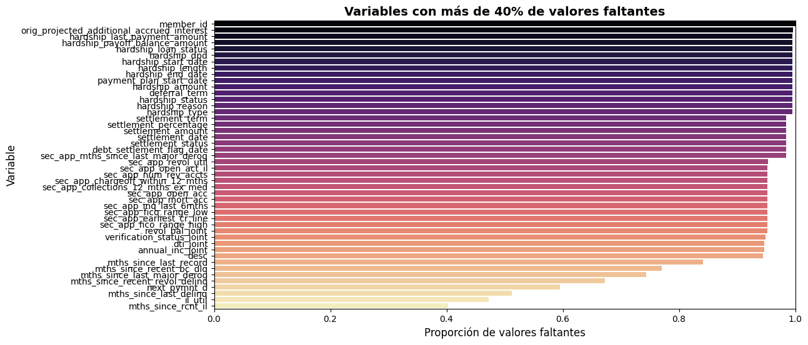
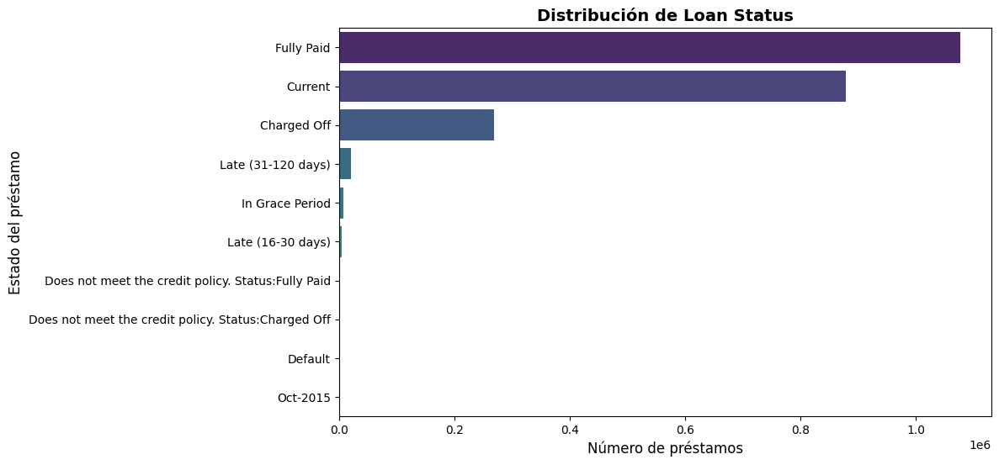
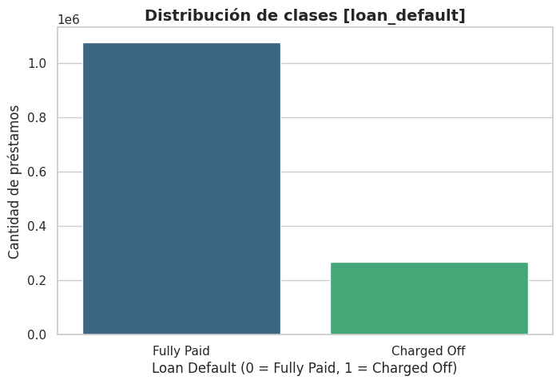
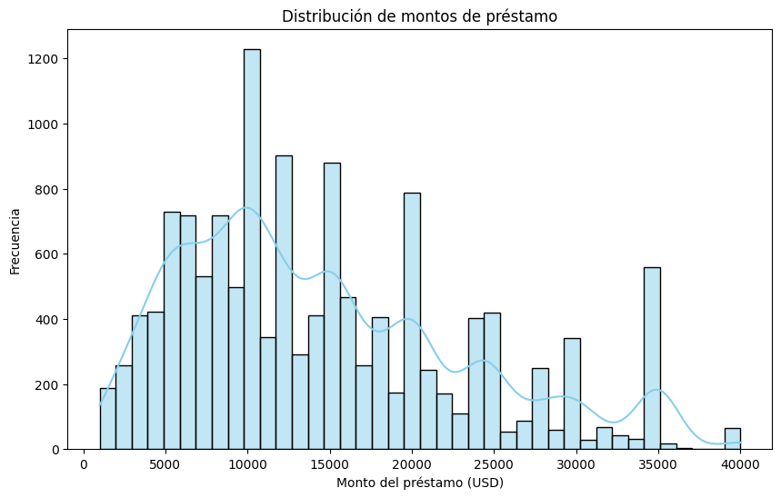
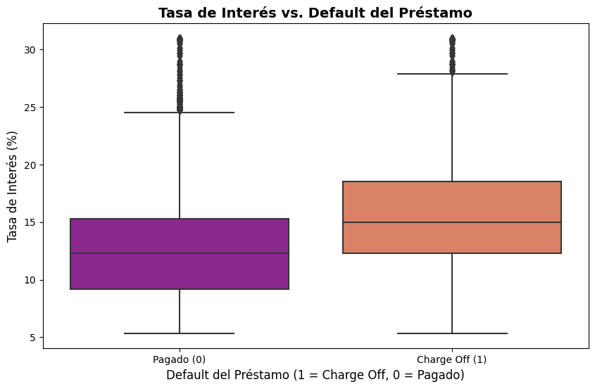
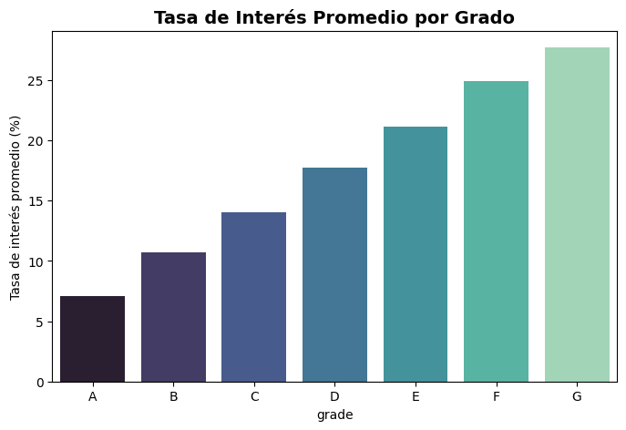
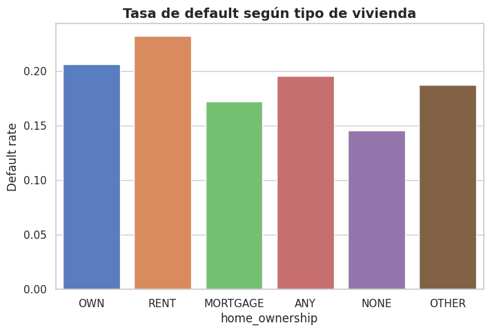
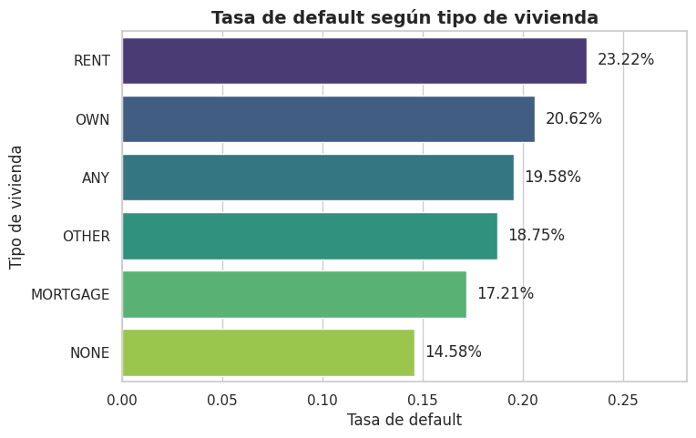
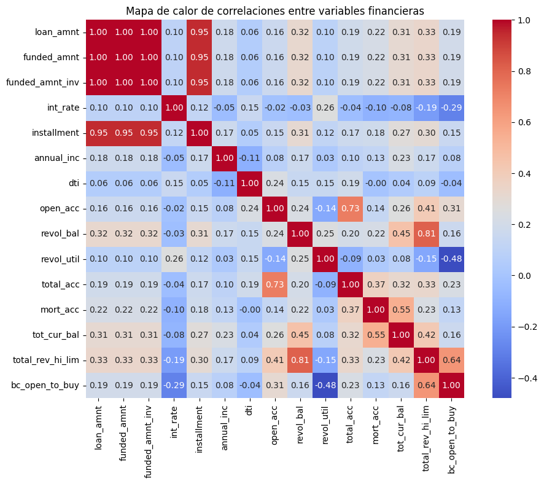

1. Contexto#
Este proyecto se desarrolla en el marco del Proyecto Integrador de Machine Learning y tiene como propósito aplicar técnicas de clasificación supervisada para predecir el riesgo de incumplimiento en préstamos otorgados por la plataforma Lending Club.
El dataset proviene de Kaggle (Lending Club Loan Data 2007–2020) y contiene información de más de 1,3 millones de registros de préstamos, tanto aceptados como rechazados. Cada registro incluye variables relacionadas con las características del solicitante (socioeconómicas, financieras, historial crediticio y empleo), así como con el propósito y condiciones del préstamo.
La variable objetivo (default) se genera a partir de la columna loan_status, codificada de la siguiente manera:
0: Fully Paid (el préstamo fue pagado completamente)1: Charged Off (el préstamo cayó en default/incumplimiento)
2. Importación de librerías#
!pip install -q pyspark
import pandas as pd
import missingno as msno
import matplotlib.pyplot as plt
import numpy as np
from pyspark.ml.feature import Imputer
import pyspark.sql.functions as F
from pyspark.sql import functions as F
from pyspark.sql import types as T
from pyspark.sql.types import *
import seaborn as sns
from pyspark.sql import SparkSession
from pyspark.sql.functions import col, count, countDistinct, isnan, when, avg, min, max, stddev
3. Carga y exploración de datos usando PySpark (EDA)#
from pyspark.sql import SparkSession
spark = SparkSession.builder \
.appName("Exploratorio_PySpark") \
.getOrCreate()
# Leer CSV con encabezados e inferencia de tipos
df = spark.read.csv("/kaggle/input/kikipyspark/accepted_2007_to_2018Q4.csv",
header=True,
inferSchema=True)
spark.sparkContext.setLogLevel("ERROR")
# Vista rápida
# Mostrar solo algunas columnas y pocas filas
df.select("loan_amnt", "int_rate", "term", "grade", "loan_status").show(20, truncate=False)
---------------------------------------------------------------------------
AnalysisException Traceback (most recent call last)
Cell In[3], line 8
3 spark = SparkSession.builder \
4 .appName("Exploratorio_PySpark") \
5 .getOrCreate()
7 # Leer CSV con encabezados e inferencia de tipos
----> 8 df = spark.read.csv("/kaggle/input/kikipyspark/accepted_2007_to_2018Q4.csv",
9 header=True,
10 inferSchema=True)
11 spark.sparkContext.setLogLevel("ERROR")
12 # Vista rápida
13 # Mostrar solo algunas columnas y pocas filas
File ~\anaconda3\envs\ml_venv\Lib\site-packages\pyspark\sql\readwriter.py:838, in DataFrameReader.csv(self, path, schema, sep, encoding, quote, escape, comment, header, inferSchema, ignoreLeadingWhiteSpace, ignoreTrailingWhiteSpace, nullValue, nanValue, positiveInf, negativeInf, dateFormat, timestampFormat, maxColumns, maxCharsPerColumn, maxMalformedLogPerPartition, mode, columnNameOfCorruptRecord, multiLine, charToEscapeQuoteEscaping, samplingRatio, enforceSchema, emptyValue, locale, lineSep, pathGlobFilter, recursiveFileLookup, modifiedBefore, modifiedAfter, unescapedQuoteHandling)
836 if type(path) == list:
837 assert self._spark._sc._jvm is not None
--> 838 return self._df(self._jreader.csv(self._spark._sc._jvm.PythonUtils.toSeq(path)))
840 if not is_remote_only():
841 from pyspark.core.rdd import RDD # noqa: F401
File ~\anaconda3\envs\ml_venv\Lib\site-packages\py4j\java_gateway.py:1362, in JavaMember.__call__(self, *args)
1356 command = proto.CALL_COMMAND_NAME +\
1357 self.command_header +\
1358 args_command +\
1359 proto.END_COMMAND_PART
1361 answer = self.gateway_client.send_command(command)
-> 1362 return_value = get_return_value(
1363 answer, self.gateway_client, self.target_id, self.name)
1365 for temp_arg in temp_args:
1366 if hasattr(temp_arg, "_detach"):
File ~\anaconda3\envs\ml_venv\Lib\site-packages\pyspark\errors\exceptions\captured.py:288, in capture_sql_exception.<locals>.deco(*a, **kw)
284 converted = convert_exception(e.java_exception)
285 if not isinstance(converted, UnknownException):
286 # Hide where the exception came from that shows a non-Pythonic
287 # JVM exception message.
--> 288 raise converted from None
289 else:
290 raise
AnalysisException: [PATH_NOT_FOUND] Path does not exist: file:/kaggle/input/kikipyspark/accepted_2007_to_2018Q4.csv. SQLSTATE: 42K03
3.2 Información básica con PySpark#
print("=== Dimensiones del DataFrame ===")
print(f"Filas: {df.count()} | Columnas: {len(df.columns)}")
# 1) Schema
print("\n=== Esquema del DataFrame ===")
df.printSchema()
# 2) Conteo de nulos por columna
print("\n=== Valores nulos por columna ===")
nulos = df.select([
count(when(col(c).isNull() | isnan(c), c)).alias(c) for c in df.columns
])
nulos.show(vertical=True)
=== Dimensiones del DataFrame ===
Filas: 2260701 | Columnas: 151
=== Esquema del DataFrame ===
root
|-- id: string (nullable = true)
|-- member_id: string (nullable = true)
|-- loan_amnt: double (nullable = true)
|-- funded_amnt: double (nullable = true)
|-- funded_amnt_inv: double (nullable = true)
|-- term: string (nullable = true)
|-- int_rate: double (nullable = true)
|-- installment: double (nullable = true)
|-- grade: string (nullable = true)
|-- sub_grade: string (nullable = true)
|-- emp_title: string (nullable = true)
|-- emp_length: string (nullable = true)
|-- home_ownership: string (nullable = true)
|-- annual_inc: string (nullable = true)
|-- verification_status: string (nullable = true)
|-- issue_d: string (nullable = true)
|-- loan_status: string (nullable = true)
|-- pymnt_plan: string (nullable = true)
|-- url: string (nullable = true)
|-- desc: string (nullable = true)
|-- purpose: string (nullable = true)
|-- title: string (nullable = true)
|-- zip_code: string (nullable = true)
|-- addr_state: string (nullable = true)
|-- dti: string (nullable = true)
|-- delinq_2yrs: string (nullable = true)
|-- earliest_cr_line: string (nullable = true)
|-- fico_range_low: string (nullable = true)
|-- fico_range_high: string (nullable = true)
|-- inq_last_6mths: string (nullable = true)
|-- mths_since_last_delinq: string (nullable = true)
|-- mths_since_last_record: string (nullable = true)
|-- open_acc: string (nullable = true)
|-- pub_rec: string (nullable = true)
|-- revol_bal: string (nullable = true)
|-- revol_util: string (nullable = true)
|-- total_acc: string (nullable = true)
|-- initial_list_status: string (nullable = true)
|-- out_prncp: string (nullable = true)
|-- out_prncp_inv: string (nullable = true)
|-- total_pymnt: string (nullable = true)
|-- total_pymnt_inv: string (nullable = true)
|-- total_rec_prncp: string (nullable = true)
|-- total_rec_int: string (nullable = true)
|-- total_rec_late_fee: string (nullable = true)
|-- recoveries: string (nullable = true)
|-- collection_recovery_fee: string (nullable = true)
|-- last_pymnt_d: string (nullable = true)
|-- last_pymnt_amnt: string (nullable = true)
|-- next_pymnt_d: string (nullable = true)
|-- last_credit_pull_d: string (nullable = true)
|-- last_fico_range_high: string (nullable = true)
|-- last_fico_range_low: string (nullable = true)
|-- collections_12_mths_ex_med: string (nullable = true)
|-- mths_since_last_major_derog: string (nullable = true)
|-- policy_code: string (nullable = true)
|-- application_type: string (nullable = true)
|-- annual_inc_joint: string (nullable = true)
|-- dti_joint: string (nullable = true)
|-- verification_status_joint: string (nullable = true)
|-- acc_now_delinq: string (nullable = true)
|-- tot_coll_amt: string (nullable = true)
|-- tot_cur_bal: string (nullable = true)
|-- open_acc_6m: string (nullable = true)
|-- open_act_il: string (nullable = true)
|-- open_il_12m: string (nullable = true)
|-- open_il_24m: string (nullable = true)
|-- mths_since_rcnt_il: string (nullable = true)
|-- total_bal_il: string (nullable = true)
|-- il_util: string (nullable = true)
|-- open_rv_12m: string (nullable = true)
|-- open_rv_24m: string (nullable = true)
|-- max_bal_bc: string (nullable = true)
|-- all_util: string (nullable = true)
|-- total_rev_hi_lim: string (nullable = true)
|-- inq_fi: string (nullable = true)
|-- total_cu_tl: string (nullable = true)
|-- inq_last_12m: double (nullable = true)
|-- acc_open_past_24mths: double (nullable = true)
|-- avg_cur_bal: string (nullable = true)
|-- bc_open_to_buy: double (nullable = true)
|-- bc_util: string (nullable = true)
|-- chargeoff_within_12_mths: double (nullable = true)
|-- delinq_amnt: double (nullable = true)
|-- mo_sin_old_il_acct: double (nullable = true)
|-- mo_sin_old_rev_tl_op: double (nullable = true)
|-- mo_sin_rcnt_rev_tl_op: double (nullable = true)
|-- mo_sin_rcnt_tl: double (nullable = true)
|-- mort_acc: double (nullable = true)
|-- mths_since_recent_bc: double (nullable = true)
|-- mths_since_recent_bc_dlq: double (nullable = true)
|-- mths_since_recent_inq: double (nullable = true)
|-- mths_since_recent_revol_delinq: double (nullable = true)
|-- num_accts_ever_120_pd: double (nullable = true)
|-- num_actv_bc_tl: double (nullable = true)
|-- num_actv_rev_tl: double (nullable = true)
|-- num_bc_sats: double (nullable = true)
|-- num_bc_tl: double (nullable = true)
|-- num_il_tl: double (nullable = true)
|-- num_op_rev_tl: double (nullable = true)
|-- num_rev_accts: double (nullable = true)
|-- num_rev_tl_bal_gt_0: double (nullable = true)
|-- num_sats: double (nullable = true)
|-- num_tl_120dpd_2m: double (nullable = true)
|-- num_tl_30dpd: double (nullable = true)
|-- num_tl_90g_dpd_24m: double (nullable = true)
|-- num_tl_op_past_12m: double (nullable = true)
|-- pct_tl_nvr_dlq: double (nullable = true)
|-- percent_bc_gt_75: double (nullable = true)
|-- pub_rec_bankruptcies: double (nullable = true)
|-- tax_liens: double (nullable = true)
|-- tot_hi_cred_lim: double (nullable = true)
|-- total_bal_ex_mort: double (nullable = true)
|-- total_bc_limit: double (nullable = true)
|-- total_il_high_credit_limit: double (nullable = true)
|-- revol_bal_joint: double (nullable = true)
|-- sec_app_fico_range_low: double (nullable = true)
|-- sec_app_fico_range_high: double (nullable = true)
|-- sec_app_earliest_cr_line: string (nullable = true)
|-- sec_app_inq_last_6mths: double (nullable = true)
|-- sec_app_mort_acc: double (nullable = true)
|-- sec_app_open_acc: double (nullable = true)
|-- sec_app_revol_util: double (nullable = true)
|-- sec_app_open_act_il: double (nullable = true)
|-- sec_app_num_rev_accts: double (nullable = true)
|-- sec_app_chargeoff_within_12_mths: double (nullable = true)
|-- sec_app_collections_12_mths_ex_med: double (nullable = true)
|-- sec_app_mths_since_last_major_derog: double (nullable = true)
|-- hardship_flag: string (nullable = true)
|-- hardship_type: string (nullable = true)
|-- hardship_reason: string (nullable = true)
|-- hardship_status: string (nullable = true)
|-- deferral_term: string (nullable = true)
|-- hardship_amount: string (nullable = true)
|-- hardship_start_date: string (nullable = true)
|-- hardship_end_date: string (nullable = true)
|-- payment_plan_start_date: string (nullable = true)
|-- hardship_length: string (nullable = true)
|-- hardship_dpd: string (nullable = true)
|-- hardship_loan_status: string (nullable = true)
|-- orig_projected_additional_accrued_interest: string (nullable = true)
|-- hardship_payoff_balance_amount: string (nullable = true)
|-- hardship_last_payment_amount: string (nullable = true)
|-- disbursement_method: string (nullable = true)
|-- debt_settlement_flag: string (nullable = true)
|-- debt_settlement_flag_date: string (nullable = true)
|-- settlement_status: string (nullable = true)
|-- settlement_date: string (nullable = true)
|-- settlement_amount: string (nullable = true)
|-- settlement_percentage: string (nullable = true)
|-- settlement_term: string (nullable = true)
=== Valores nulos por columna ===
[Stage 8:====================================================> (12 + 1) / 13]
-RECORD 0---------------------------------------------
id | 0
member_id | 2260701
loan_amnt | 33
funded_amnt | 33
funded_amnt_inv | 33
term | 33
int_rate | 33
installment | 33
grade | 33
sub_grade | 33
emp_title | 167002
emp_length | 146940
home_ownership | 33
annual_inc | 37
verification_status | 33
issue_d | 33
loan_status | 33
pymnt_plan | 33
url | 33
desc | 2134633
purpose | 34
title | 23359
zip_code | 35
addr_state | 34
dti | 1745
delinq_2yrs | 63
earliest_cr_line | 63
fico_range_low | 34
fico_range_high | 34
inq_last_6mths | 64
mths_since_last_delinq | 1158374
mths_since_last_record | 1901354
open_acc | 143
pub_rec | 125
revol_bal | 87
revol_util | 1867
total_acc | 83
initial_list_status | 50
out_prncp | 50
out_prncp_inv | 54
total_pymnt | 46
total_pymnt_inv | 44
total_rec_prncp | 42
total_rec_int | 36
total_rec_late_fee | 36
recoveries | 35
collection_recovery_fee | 39
last_pymnt_d | 2467
last_pymnt_amnt | 36
next_pymnt_d | 1345119
last_credit_pull_d | 158
last_fico_range_high | 76
last_fico_range_low | 68
collections_12_mths_ex_med | 201
mths_since_last_major_derog | 1679686
policy_code | 99
application_type | 88
annual_inc_joint | 2139788
dti_joint | 2139829
verification_status_joint | 2144839
acc_now_delinq | 221
tot_coll_amt | 70176
tot_cur_bal | 70204
open_acc_6m | 866068
open_act_il | 866092
open_il_12m | 866117
open_il_24m | 866124
mths_since_rcnt_il | 909923
total_bal_il | 866133
il_util | 1068859
open_rv_12m | 866146
open_rv_24m | 866142
max_bal_bc | 866150
all_util | 866374
total_rev_hi_lim | 70304
inq_fi | 866155
total_cu_tl | 866153
inq_last_12m | 866161
acc_open_past_24mths | 50060
avg_cur_bal | 70376
bc_open_to_buy | 74966
bc_util | 76103
chargeoff_within_12_mths | 432
delinq_amnt | 258
mo_sin_old_il_acct | 139003
mo_sin_old_rev_tl_op | 70225
mo_sin_rcnt_rev_tl_op | 70249
mo_sin_rcnt_tl | 70271
mort_acc | 50038
mths_since_recent_bc | 73425
mths_since_recent_bc_dlq | 1740974
mths_since_recent_inq | 295446
mths_since_recent_revol_delinq | 1520323
num_accts_ever_120_pd | 70297
num_actv_bc_tl | 70300
num_actv_rev_tl | 70307
num_bc_sats | 58621
num_bc_tl | 70307
num_il_tl | 70302
num_op_rev_tl | 70302
num_rev_accts | 70308
num_rev_tl_bal_gt_0 | 70307
num_sats | 58621
num_tl_120dpd_2m | 153689
num_tl_30dpd | 70309
num_tl_90g_dpd_24m | 70307
num_tl_op_past_12m | 70307
pct_tl_nvr_dlq | 70463
percent_bc_gt_75 | 75411
pub_rec_bankruptcies | 1637
tax_liens | 338
tot_hi_cred_lim | 70212
total_bal_ex_mort | 49981
total_bc_limit | 50003
total_il_high_credit_limit | 70271
revol_bal_joint | 2152654
sec_app_fico_range_low | 2152660
sec_app_fico_range_high | 2152655
sec_app_earliest_cr_line | 2152657
sec_app_inq_last_6mths | 2152665
sec_app_mort_acc | 2152667
sec_app_open_acc | 2152671
sec_app_revol_util | 2154514
sec_app_open_act_il | 2152678
sec_app_num_rev_accts | 2152678
sec_app_chargeoff_within_12_mths | 2152673
sec_app_collections_12_mths_ex_med | 2152673
sec_app_mths_since_last_major_derog | 2224757
hardship_flag | 287
hardship_type | 2249725
hardship_reason | 2249738
hardship_status | 2249744
deferral_term | 2249760
hardship_amount | 2249766
hardship_start_date | 2249775
hardship_end_date | 2249772
payment_plan_start_date | 2249771
hardship_length | 2249774
hardship_dpd | 2249777
hardship_loan_status | 2249777
orig_projected_additional_accrued_interest | 2252048
hardship_payoff_balance_amount | 2249783
hardship_last_payment_amount | 2249783
disbursement_method | 288
debt_settlement_flag | 226
debt_settlement_flag_date | 2226353
settlement_status | 2226370
settlement_date | 2226393
settlement_amount | 2226417
settlement_percentage | 2226431
settlement_term | 2226435
Resumen del DataFrame#
Valores nulos: Varias variables presentan muchos valores faltantes
(ejemplo:desc,annual_inc_joint,sec_app_,hardship_) → no todas son útiles para un análisis general.
Información de los préstamos#
Monto promedio: ~15K USD (máx. 40K).
Tasa de interés media: 13%.
Plazos: Mayoría a 36 o 60 meses.
Información de los prestatarios#
Ingreso anual promedio: ~78K USD (con alta dispersión).
Rango FICO típico: ~690–700 → refleja riesgo crediticio medio.
# 4) Distribución de loan_status)
print("\n=== Distribución de loan_status ===")
if "loan_status" in df.columns:
df.groupBy("loan_status").count().orderBy("count", ascending=False).show()
=== Distribución de loan_status ===
[Stage 11:===================================================> (12 + 1) / 13]
+--------------------+-------+
| loan_status| count|
+--------------------+-------+
| Fully Paid|1076751|
| Current| 878317|
| Charged Off| 268558|
| Late (31-120 days)| 21467|
| In Grace Period| 8436|
| Late (16-30 days)| 4349|
|Does not meet the...| 1988|
|Does not meet the...| 761|
| Default| 40|
| NULL| 33|
| Oct-2015| 1|
+--------------------+-------+
Variable loan_status#
La variable loan_status indica el estado final o actual de cada préstamo en Lending Club.
Su distribución es la siguiente:
Préstamos pagados en su totalidad (Fully Paid): 1.07M → son la mayoría de los casos.
Préstamos actuales (Current): 878K → muchos aún están en curso.
Incumplimientos / pérdidas:
Charged Off: 268K (~10%) → representan los casos incobrables.
Default + Late (varios rangos): suman decenas de miles → muestran un riesgo latente.
Valores atípicos: etiquetas como
Oct-2015oNULLparecen errores de registro.
Interpretación de categorías#
Fully Paid → El préstamo fue pagado en su totalidad. Se clasifica como 0 (no default).
Charged Off → El préstamo fue castigado como pérdida. Se clasifica como 1 (default).
Default → Incumplimiento total, equivalente a Charged Off, pero solo hay 40. → Se excluye
Current → El préstamo sigue en curso. → Se excluye del dataset.
In Grace Period → El cliente aún está en período de gracia. → Se excluye.
Late (16–30 days) → Atraso de 16–30 días. → Se excluye.
Late (31–120 days) → Atraso de 31–120 días. → Se excluye.
Does not meet the credit policy: Status = Fully Paid → No cumplía políticas, pero fue pagado. → Se excluye.
Does not meet the credit policy: Status = Charged Off → No cumplía políticas y terminó en default. → Se excluye.
Nos quedaremos con Fully Paid y con Charged Off
# 5) Top categorías más frecuentes en 'grade'
print("\n=== Distribución de grade ===")
if "grade" in df.columns:
df.groupBy("grade").count().orderBy("grade").show()
# 6) Correlación rápida (ejemplo entre loan_amnt y int_rate si existen)
print("\n=== Correlación ===")
if "loan_amnt" in df.columns and "int_rate" in df.columns:
print("Correlación loan_amnt - int_rate:", df.stat.corr("loan_amnt", "int_rate"))
=== Distribución de grade ===
+-----+------+
|grade| count|
+-----+------+
| NULL| 33|
| A|433027|
| B|663557|
| C|650053|
| D|324424|
| E|135639|
| F| 41800|
| G| 12168|
+-----+------+
=== Correlación ===
[Stage 17:===================================================> (12 + 1) / 13]
Correlación loan_amnt - int_rate: 0.09813935834177831
Distribución de grade#
Grades más frecuentes:
B(663K) yC(650K) → concentran la mayoría de los préstamos.A(433K) → también alta participación.
Grades bajos (
E,F,G): menos comunes, pero representan mayor riesgo crediticio.Nulos: 33 casos → insignificantes, pero a limpiar.
Correlación loan_amnt – int_rate#
Coeficiente: 0.098 → muy baja correlación positiva.
Implica que el monto del préstamo casi no influye en la tasa de interés;
lo determinante son otras variables que veremos a futuro.
3.3 Tratamiento de datos faltante#
Para este paso, nos enfocaremos únicamente en las variables que presentan más del 40% de datos faltantes.
Esto nos permitirá identificar aquellas columnas que podrían:
Ser irrelevantes para el modelo.
Requerir un tratamiento especial (imputación, eliminación o transformación).
Indicar posibles problemas de calidad de datos en el dataset.
# Calculamos proporción de missing por columna
missing_df = df.select([
(1 - (F.count(c) / F.count('*'))).alias(c)
for c in df.columns
]).toPandas()
# Transponemos para dejar "variable - missing_rate"
missing_df = missing_df.T.reset_index()
missing_df.columns = ["variable", "missing_rate"]
# Filtramos solo las que tienen más de 40% de valores faltantes
missing_df = missing_df[missing_df["missing_rate"] > 0.40]\
.sort_values("missing_rate", ascending=False)
# Gráfico
plt.figure(figsize=(12, 6))
sns.barplot(
data=missing_df,
x="missing_rate",
y="variable",
palette="magma"
)
plt.title("Variables con más de 40% de valores faltantes", fontsize=14, weight="bold")
plt.xlabel("Proporción de valores faltantes", fontsize=12)
plt.ylabel("Variable", fontsize=12)
plt.xlim(0, 1)
plt.show()

Procedemos a eliminar las columnas, ya que aportan poco valor y su imputación introduciría demasiado ruido.
# Lista de columnas con más de 40% missing
cols_to_drop = missing_df["variable"].tolist()
print(f"Eliminaremos {len(cols_to_drop)} columnas con >40% de valores faltantes")
# Eliminamos del DataFrame en PySpark
df_clean = df.drop(*cols_to_drop)
# Verificamos nuevo número de columnas
print(f"Antes: {len(df.columns)} columnas")
print(f"Después: {len(df_clean.columns)} columnas")
Eliminaremos 46 columnas con >40% de valores faltantes
Antes: 151 columnas
Después: 105 columnas
3.4 Visualizaciones con PySpark#
Tratamiento de la variable Loan Status#
# 1. Distribución Loan Status
loan_status_counts = (
df_clean.groupBy("loan_status")
.count()
.orderBy("count", ascending=False)
.toPandas()
)
plt.figure(figsize=(10, 6))
sns.barplot(
data=loan_status_counts,
x="count",
y="loan_status",
palette="viridis"
)
plt.title("Distribución de Loan Status", fontsize=14, weight="bold")
plt.xlabel("Número de préstamos", fontsize=12)
plt.ylabel("Estado del préstamo", fontsize=12)
plt.show()

Como comentamos antes nos enfocaremos en los préstamos con estado ‘Fully Paid’ y ‘Charged Off’ y creamos nustra la variable binaria target loan_default
df_bin_pd = df_bin.groupBy("loan_default").count().toPandas()
df_bin_pd = df_bin_pd.sort_values("loan_default")
sns.set_style("whitegrid")
plt.figure(figsize=(8,5))
# Barplot
sns.barplot(
x="loan_default",
y="count",
data=df_bin_pd,
palette="viridis"
)
plt.xlabel("Loan Default (0 = Fully Paid, 1 = Charged Off)", fontsize=12)
plt.ylabel("Cantidad de préstamos", fontsize=12)
plt.title("Distribución de Clases [loan_default]", fontsize=14, weight="bold")
plt.xticks([0,1], ["Fully Paid", "Charged Off"])
plt.show()

Nota: La variable
loan_defaultpresenta un fuerte desbalanceo de clases.
Solo ~20% de los préstamos terminan en default (268K) frente a ~80% que son fully paid (1.07M).
Este desbalance puede afectar los modelos de clasificación, favoreciendo la predicción de la clase mayoritaria.
Será necesario considerar técnicas como oversampling o de undersampling.
Análisis de Montos de Préstamos#
# 2. Distribución Loan Amount
loan_amount_sample = df_bin.select("loan_amnt").sample(False, 0.01, seed=42).toPandas()
plt.figure(figsize=(10,6))
sns.histplot(loan_amount_sample["loan_amnt"], bins=40, kde=True, color="skyblue")
plt.title("Distribución de montos de préstamo")
plt.xlabel("Monto del préstamo (USD)")
plt.ylabel("Frecuencia")
plt.show()
/usr/local/lib/python3.11/dist-packages/seaborn/_oldcore.py:1119: FutureWarning: use_inf_as_na option is deprecated and will be removed in a future version. Convert inf values to NaN before operating instead.
with pd.option_context('mode.use_inf_as_na', True):

Rango de préstamos: aproximadamente entre 1.000 a 40.000 USD, con concentración entre 5.000 y 20.000 USD.
Montos más frecuentes: picos alrededor de 10,000, y 15,000 USD, indicando preferencia por montos “redondeados” o estándar.
Distribución: asimétrica hacia la derecha (right-skewed), con muchos préstamos bajos y medianos, y pocos préstamos grandes cercanos a $40,000.
La mayoría de los préstamos son moderados, lo que podría implicar menor riesgo. Los préstamos grandes podrían tener mayor probabilidad de default.
Tasa de Interés vs. Default del Préstamo#
# Extraemos la columna 'int_rate' y la convertimos a un tipo numérico (si es string)
from pyspark.sql.functions import regexp_replace, col
# Nota: Asumiendo que 'int_rate' es un string como '12.99 %', lo limpiamos primero
df_bin_numeric = df_bin.withColumn("int_rate_num", regexp_replace(col("int_rate"), "%", "").cast("float"))
# Ahora hacemos el análisis
sample_int_rate = df_bin_numeric.select("int_rate_num", "loan_default").sample(False, 0.1, seed=42).toPandas()
plt.figure(figsize=(10, 6))
sns.boxplot(data=sample_int_rate, x="loan_default", y="int_rate_num", palette="plasma")
plt.title("Tasa de Interés vs. Default del Préstamo", fontsize=14, weight="bold")
plt.xlabel("Default del Préstamo (1 = Charge Off, 0 = Pagado)", fontsize=12)
plt.ylabel("Tasa de Interés (%)", fontsize=12)
plt.xticks([0, 1], ['Pagado (0)', 'Charge Off (1)'])
plt.show()

Los préstamos con tasas de interés más altas muestran una probabilidad significativamente mayor de caer en default, confirmando su papel como un fuerte indicador de riesgo crediticio.
Tasa de Interés Promedio por Grado#
grade_rate = (
df_bin.groupBy("grade")
.agg(F.avg("int_rate").alias("avg_int_rate"))
.orderBy("grade")
.toPandas()
)
plt.figure(figsize=(8,5))
sns.barplot(data=grade_rate, x="grade", y="avg_int_rate", palette="mako")
plt.title("Tasa de Interés Promedio por Grado", fontsize=14, weight="bold")
plt.ylabel("Tasa de interés promedio (%)")
plt.show()

Tasas más altas en grados bajos (peor calidad crediticia).
home_ownership vs default rate#
home = (
df_bin.groupBy("home_ownership")
.agg(F.mean("loan_default").alias("default_rate"))
.toPandas()
)
plt.figure(figsize=(8,5))
sns.barplot(data=home, x="home_ownership", y="default_rate", palette="muted")
plt.title("Tasa de default según tipo de vivienda", fontsize=14, weight="bold")
plt.ylabel("Default rate")
plt.show()

# Agrupar por tipo de vivienda y calcular tasa de default
home = (
df_bin.groupBy("home_ownership")
.agg(F.mean("loan_default").alias("default_rate"))
.toPandas()
)
# Ordenar por default_rate de mayor a menor para mejor interpretación
home = home.sort_values("default_rate", ascending=False)
# Configuración de estilo
sns.set_style("whitegrid")
plt.figure(figsize=(8,5))
# Barplot
sns.barplot(
data=home,
x="default_rate",
y="home_ownership",
palette="viridis"
)
# Añadir etiquetas y título
plt.xlabel("Tasa de default", fontsize=12)
plt.ylabel("Tipo de vivienda", fontsize=12)
plt.title("Tasa de default según tipo de vivienda", fontsize=14, weight="bold")
# Añadir etiquetas de porcentaje encima de cada barra
for index, value in enumerate(home["default_rate"]):
plt.text(value + 0.005, index, f"{value:.2%}", va='center')
plt.xlim(0, home["default_rate"].max() + 0.05) # Ajustar límite x
plt.show()

El análisis revela una fuerte correlación entre el tipo de vivienda y el riesgo de incumplimiento, actuando como un claro indicador de la estabilidad financiera del prestatario. Los inquilinos (RENT) presentan el riesgo más alto con un 23.2%, seguidos por los propietarios sin deuda (OWN) con un 20.6%, mientras que aquellos que pagan una hipoteca (MORTGAGE) representan el grupo más fiable con la tasa más baja, un 17.2%. Esto confirma que los prestatarios con un mayor compromiso financiero en su vivienda tienden a ser un riesgo crediticio menor.
Mapa de calor de correlaciones entre variables financieras#
# Selección de variables numéricas de interés
num_cols = [
"loan_amnt", "funded_amnt", "funded_amnt_inv",
"int_rate", "installment", "annual_inc",
"dti", "open_acc", "revol_bal", "revol_util",
"total_acc", "mort_acc", "tot_cur_bal",
"total_rev_hi_lim", "bc_open_to_buy"
]
# Pasamos un sample a Pandas para manejarlo
numeric_sample = df.select(num_cols).dropna().sample(False, 0.01, seed=42).toPandas()
# Calcular matriz de correlaciones
corr = numeric_sample.corr()
# Heatmap
plt.figure(figsize=(12,8))
sns.heatmap(corr, annot=True, fmt=".2f", cmap="coolwarm", cbar=True, square=True)
plt.title("Mapa de calor de correlaciones entre variables financieras")
plt.show()

Al finalizar el Análisis Exploratorio de Datos nos qudamos con algunos Hallazgos Principales:
Desbalance de Clases: Al filtrar los datos para quedarnos únicamente con préstamos finalizados (‘Fully Paid’ y ‘Charged Off’), se ha confirmado un fuerte desbalance: aproximadamente el 80% de los préstamos son pagados, mientras que solo el 20% resulta en default. Esto será un factor crucial a manejar durante el modelado.
Indicadores de Riesgo Financiero: Se observa una clara correlación positiva entre el riesgo de default y las variables financieras. Préstamos con montos (
loan_amnt) más altos y, de forma más pronunciada, con tasas de interés (int_rate) elevadas, tienen una mayor propensión al incumplimiento.Estabilidad del Prestatario: Variables como el tipo de vivienda (
home_ownership) y el grado del préstamo (grade) actúan como un buen proxy de la estabilidad financiera. Los inquilinos (RENT) muestran la tasa de default más alta, mientras que los propietarios con hipoteca (MORTGAGE) son el grupo de menor riesgo.
Este análisis ha validado la relevancia de las variables seleccionadas y ha sentado las bases para la siguiente etapa. Con una comprensión clara de los datos, procederemos ahora a la fase de Modelado Predictivo, donde construiremos y evaluaremos los modelos de clasificación con PySpark y scikit-learn para predecir la probabilidad de default.